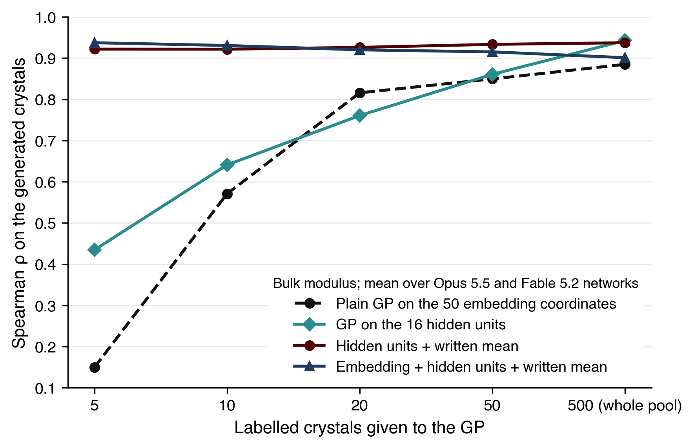

MATERIALS SCIENCE & ENGINEERING
TEXAS A&M UNIVERSITY
Department of Materials Science and Engineering
68

ρ at 5 / 20 / 500 labels
embedding only: 0.15 / 0.82 / 0.88
hidden units only: 0.43 / 0.76 / 0.94
hidden + mean: 0.92 / 0.93 / 0.94
all three: 0.94 / 0.92 / 0.90